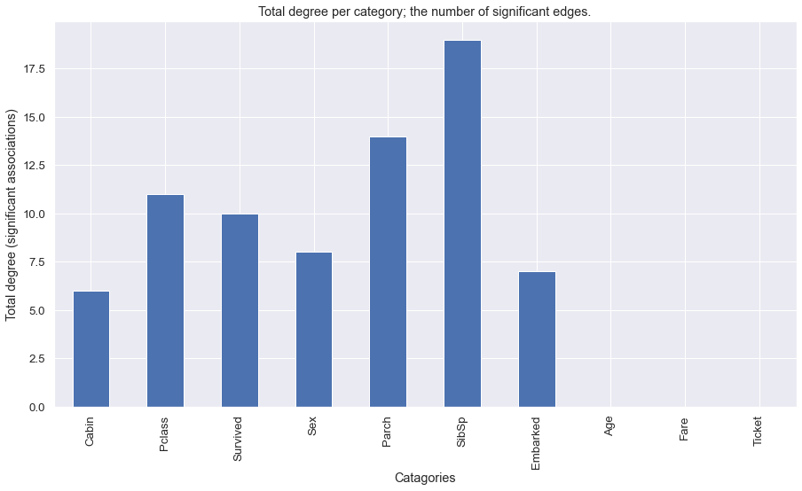

Use Cases
HNet can be used for all kind of datasets that contain features such as categorical, boolean, and/or continuous values.
- Your goal can be for example:
Explore the complex associations between your variables.
Explain your clusters by enrichment of the meta-data.
Transform your feature space into network graph and/or dissimilarity matrix that can be used for further analysis.
Here we will explore various data sets for the goals 1, 2 and 3.
Cancer dataset
The cancer data set contains only a few columns but can result in an enormous complexity in their cross-relationships.
To unravel the associations between the variables, and gain insights, we can easily run hnet. This dataset already contains tsne and PCA coordinates that we do not use. We will black list those to prevent being modeled.
# Import
import hnet
# Import example dataset
df = hnet.import_example('cancer')
# Print
print(df.head())
tsneX |
tsneY |
age |
sex |
survival_months |
death_indicator |
labx |
PC1 |
PC2 |
|
|---|---|---|---|---|---|---|---|---|---|
0 |
37.2043 |
24.1628 |
58 |
male |
44.5175 |
0 |
acc |
49.2335 |
14.4965 |
1 |
37.0931 |
23.4236 |
44 |
female |
55.0965 |
0 |
acc |
46.328 |
14.4645 |
2 |
36.8063 |
23.4449 |
23 |
female |
63.8029 |
1 |
acc |
46.5679 |
13.4801 |
3 |
38.0679 |
24.4118 |
30 |
male |
11.9918 |
0 |
acc |
63.6247 |
1.87406 |
4 |
36.7912 |
21.7153 |
29 |
female |
79.77 |
1 |
acc |
41.7467 |
37.5336 |
# Import
from hnet import hnet
# Initialize
hn = hnet(black_list=['tsneX','tsneY','PC1','PC2'])
# Learn the relationships
results = hn.association_learning(df)
Output looks as following
# [hnet] >Removing features from the black list..
# [DTYPES] Auto detecting dtypes
# [DTYPES] [age] > [float]->[num] [74]
# [DTYPES] [sex] > [obj] ->[cat] [2]
# [DTYPES] [survival_months] > [force]->[num] [1591]
# [DTYPES] [death_indicator] > [float]->[num] [2]
# [DTYPES] [labx] > [obj] ->[cat] [19]
# [DTYPES] Setting dtypes in dataframe
# [DF2ONEHOT] Working on age
# [DF2ONEHOT] Working on sex.....[3]
# [DF2ONEHOT] Working on survival_months
# [DF2ONEHOT] Working on labx.....[19]
# [DF2ONEHOT] Total onehot features: 22
# [hnet] >Association learning across [22] categories.
# 100%|██████████| 22/22 [00:07<00:00, 2.77it/s]
# [hnet] >Total number of computations: [969]
# [hnet] >Multiple test correction using holm
# [hnet] >Dropping age
# [hnet] >Dropping survival_months
# [hnet] >Dropping death_indicator
# [hnet] >Fin.
Antecedents and Consequents
If A implies C, then A is called the antecedent and C is called the consequent. For the cancer data set we computed the antecedent and its consequent. Here we can see that the strongest antecedents are BRCA: Breast cancer, CESC: Cervical squamous cell carcinoma, and OV: Ovarian Cancer, implies to the gender Female. A Fishers Pvalue is detected of 0 (because of floating precision error.) The second most significant hit is that females, and death indicator=1 implies to Breast cancer cases.
# Import example dataset
print(hn.results['rules'])
antecedents |
consequents |
Pfisher |
|
|---|---|---|---|
0 |
[‘labx_brca’, ‘labx_cesc’, ‘labx_ov’, ‘age_low_58’, ‘survival_months_low_13.8’] |
sex_female |
0 |
1 |
[‘sex_female’, ‘death_indicator_low_1’] |
labx_brca |
4.05787e-210 |
2 |
[‘sex_male’, ‘death_indicator_low_1’] |
labx_prad |
3.73511e-104 |
3 |
[‘sex_female’, ‘death_indicator_low_0’, ‘survival_months_low_29’] |
labx_ov |
4.24764e-100 |
4 |
[‘labx_blca’, ‘labx_coad’, ‘labx_hnsc’, ‘labx_kirc’, ‘labx_kirp’, ‘labx_prad’, ‘age_low_61’, ‘survival_months_low_10.8’] |
sex_male |
7.99303e-93 |
# Generate the interactive graph.
G = hn.d3graph()
# Generate the interactive graph but color on clusters.
G = hn.d3graph(node_color='cluster')
# Filter using white_list
G = hn.d3graph(node_color='cluster', white_list=['labx','survival_months'])
Fifa dataset
The Fifa data set is from 2018 and contains many variables. By default, many variables would be converted to categorical values which may not be the ideal choice. We will set the dtypes manually to make sure each variable has the correct dtype.
# Import
import hnet
# Import example dataset
df = hnet.import_example('fifa')
# Print
print(df.head())
Date |
Team |
Opponent |
Goal Scored |
Ball Possession % |
Attempts |
On-Target |
Off-Target |
Blocked |
Corners |
Offsides |
Free Kicks |
Saves |
Pass Accuracy % |
Passes |
Distance Covered (Kms) |
Fouls Committed |
Yellow Card |
Yellow & Red |
Red |
Man of the Match |
1st Goal |
Round |
PSO |
Goals in PSO |
Own goals |
Own goal Time |
|
|---|---|---|---|---|---|---|---|---|---|---|---|---|---|---|---|---|---|---|---|---|---|---|---|---|---|---|---|
0 |
14-06-2018 |
Russia |
Saudi Arabia |
5 |
40 |
13 |
7 |
3 |
3 |
6 |
3 |
11 |
0 |
78 |
306 |
118 |
22 |
0 |
0 |
0 |
Yes |
12 |
Group Stage |
No |
0 |
nan |
nan |
1 |
14-06-2018 |
Saudi Arabia |
Russia |
0 |
60 |
6 |
0 |
3 |
3 |
2 |
1 |
25 |
2 |
86 |
511 |
105 |
10 |
0 |
0 |
0 |
No |
nan |
Group Stage |
No |
0 |
nan |
nan |
2 |
15-06-2018 |
Egypt |
Uruguay |
0 |
43 |
8 |
3 |
3 |
2 |
0 |
1 |
7 |
3 |
78 |
395 |
112 |
12 |
2 |
0 |
0 |
No |
nan |
Group Stage |
No |
0 |
nan |
nan |
3 |
15-06-2018 |
Uruguay |
Egypt |
1 |
57 |
14 |
4 |
6 |
4 |
5 |
1 |
13 |
3 |
86 |
589 |
111 |
6 |
0 |
0 |
0 |
Yes |
89 |
Group Stage |
No |
0 |
nan |
nan |
4 |
15-06-2018 |
Morocco |
Iran |
0 |
64 |
13 |
3 |
6 |
4 |
5 |
0 |
14 |
2 |
86 |
433 |
101 |
22 |
1 |
0 |
0 |
No |
nan |
Group Stage |
No |
0 |
1 |
90 |
Learn associations
# Import
from hnet import hnet
# Initialize
hn = hnet(dtypes=['None', 'cat', 'cat', 'cat', 'num', 'num', 'num', 'num', 'num', 'num', 'num', 'num', 'num', 'num', 'num', 'num', 'cat', 'cat', 'cat', 'cat', 'cat', 'cat', 'cat', 'cat', 'cat', 'cat', 'num'])
# Learn the relationships
results = hn.association_learning(df)
Output looks as following
# [DTYPES] Setting dtypes in dataframe
# [DTYPES] [Date] [list] is used in dtyping!
# [DF2ONEHOT] Working on Date.....[25]
# [DF2ONEHOT] Working on Team.....[32]
# [DF2ONEHOT] Working on Opponent.....[32]
# [DF2ONEHOT] Working on Goal Scored.....[7]
# [DF2ONEHOT] Working on Ball Possession %
# [DF2ONEHOT] Working on Attempts
# [DF2ONEHOT] Working on On-Target
# [DF2ONEHOT] Working on Off-Target
# [DF2ONEHOT] Working on Blocked
# [DF2ONEHOT] Working on Corners
# [DF2ONEHOT] Working on Offsides
# [DF2ONEHOT] Working on Free Kicks
# [DF2ONEHOT] Working on Saves
# [DF2ONEHOT] Working on Pass Accuracy %
# [DF2ONEHOT] Working on Passes
# [DF2ONEHOT] Working on Distance Covered (Kms)
# [DF2ONEHOT] Working on Fouls Committed.....[21]
# [DF2ONEHOT] Working on Yellow Card.....[7]
# [DF2ONEHOT] Working on Yellow & Red.....[2]
# [DF2ONEHOT] Working on Red.....[2]
# 0%| | 0/24 [00:00<?, ?it/s][DF2ONEHOT] Working on Man of the Match.....[2]
# [DF2ONEHOT] Working on 1st Goal.....[57]
# [DF2ONEHOT] Working on Round.....[6]
# [DF2ONEHOT] Working on PSO.....[2]
# [DF2ONEHOT] Working on Goals in PSO.....[4]
# [DF2ONEHOT] Working on Own goals.....[2]
# [DF2ONEHOT] Working on Own goal Time
# [DF2ONEHOT] Total onehot features: 24
# [hnet] >Association learning across [24] categories.
# 100%|██████████| 24/24 [00:22<00:00, 1.08it/s]
# [hnet] >Total number of computations: [5240]
# [hnet] >Multiple test correction using holm
# [hnet] >Dropping 1st Goal
# [hnet] >Dropping Own goals
# [hnet] >Dropping Own goal Time
# [hnet] >Fin.
Antecedents and Consequents
The conclusions are mostly about who/what was not doing so well during the matches. A lot of information seems relevant for improvement of matches. As an example, if you are not the man of the match, you will likely have 0 goals. Checkout the Pvalues here. Although they are significant, its less then with the cancer data set for example. It seems that football is not so complicated after all ;)
# Import example dataset
print(hn.results['rules'])
antecedents_labx |
antecedents |
consequents |
Pfisher |
|
|---|---|---|---|---|
1 |
[‘Round’ ‘Goals in PSO’ ‘Distance Covered (Kms)’] |
[‘Round_Group Stage’, ‘Goals in PSO_0’, ‘Distance Covered (Kms)_low_104’] |
PSO_No |
7.60675e-11 |
2 |
[‘Round’ ‘PSO’ ‘Distance Covered (Kms)’] |
[‘Round_Group Stage’, ‘PSO_No’, ‘Distance Covered (Kms)_low_104’] |
Goals in PSO_0 |
7.60675e-11 |
3 |
[‘Man of the Match’] |
[‘Man of the Match_No’] |
Goal Scored_0 |
1.68161e-06 |
4 |
[‘Goal Scored’] |
[‘Goal Scored_0’] |
Man of the Match_No |
1.68161e-06 |
5 |
[‘PSO’ ‘Goals in PSO’] |
[‘PSO_No’, ‘Goals in PSO_0’] |
Round_Group Stage |
0.00195106 |
Create the network graph. Im not entirely sure what to say about this. Draw your own conclusions ;)
# Generate the interactive graph.
G = hn.d3graph()
Census Income dataset
The adult dataset is to determine whether income exceeds $50K/yr based on census data. Also known as “Census Income” dataset. This dataset is Multivariate (categorical, and integer variables), contains in total 48842 instances, missing values, and is located in the archives of [UCI](https://archive.ics.uci.edu/ml/).
Lets find out what we can learn from this data set using HNet.
# Import
import hnet
# Download directly from the archives of UCI using the url location
df = hnet.import_example(url='https://archive.ics.uci.edu/ml/machine-learning-databases/adult/adult.data')
# There are no column names so attach it.
df.columns=['age','workclass','fnlwgt','education','education-num','marital-status','occupation','relationship','race','sex','capital-gain','capital-loss','hours-per-week','native-country','earnings']
# Examine the results by eye
print(df.head())
age |
workclass |
fnlwgt |
education |
education-num |
marital-status |
occupation |
relationship |
race |
sex |
capital-gain |
capital-loss |
hours-per-week |
native-country |
earnings |
|
|---|---|---|---|---|---|---|---|---|---|---|---|---|---|---|---|
0 |
50 |
Self-emp-not-inc |
83311 |
Bachelors |
13 |
Married-civ-spouse |
Exec-managerial |
Husband |
White |
Male |
0 |
0 |
13 |
United-States |
<=50K |
1 |
38 |
Private |
215646 |
HS-grad |
9 |
Divorced |
Handlers-cleaners |
Not-in-family |
White |
Male |
0 |
0 |
40 |
United-States |
<=50K |
2 |
53 |
Private |
234721 |
11th |
7 |
Married-civ-spouse |
Handlers-cleaners |
Husband |
Black |
Male |
0 |
0 |
40 |
United-States |
<=50K |
3 |
28 |
Private |
338409 |
Bachelors |
13 |
Married-civ-spouse |
Prof-specialty |
Wife |
Black |
Female |
0 |
0 |
40 |
Cuba |
<=50K |
4 |
37 |
Private |
284582 |
Masters |
14 |
Married-civ-spouse |
Exec-managerial |
Wife |
White |
Female |
0 |
0 |
40 |
United-States |
<=50K |
Learn associations
# Import hnet
from hnet import hnet
# Set a few variables to float to make sure that these are processed as numeric values.
cols_as_float = ['age','hours-per-week','capital-loss','capital-gain']
df[cols_as_float] = df[cols_as_float].astype(float)
# Black list one of the variables. (I do not now what it does and whether it should be numeric or categoric)
hn = hnet(black_list=['fnlwgt'])
# Learn the associations.
results = hn.association_learning(df)
Output looks as following
# [hnet] >preprocessing : Column names are set to str. and spaces are trimmed.
# [hnet] >Removing features from the black list..
# [df2onehot] >Auto detecting dtypes
# [df2onehot] >[age] > [float] > [num] [73]
# [df2onehot] >[workclass] > [obj] > [cat] [9]
# [df2onehot] >[education] > [obj] > [cat] [16]
# [df2onehot] >[education-num] > [int] > [cat] [16]
# [df2onehot] >[marital-status] > [obj] > [cat] [7]
# [df2onehot] >[occupation] > [obj] > [cat] [15]
# [df2onehot] >[relationship] > [obj] > [cat] [6]
# [df2onehot] >[race] > [obj] > [cat] [5]
# [df2onehot] >[sex] > [obj] > [cat] [2]
# [df2onehot] >[capital-gain] > [float] > [num] [119]
# [df2onehot] >[capital-loss] > [float] > [num] [92]
# [df2onehot] >[hours-per-week] > [float] > [num] [94]
# [df2onehot] >[native-country] > [obj] > [cat] [42]
# [df2onehot] >[earnings] > [obj] > [cat] [2]
# [df2onehot] >
# [df2onehot] >Setting dtypes in dataframe
# [df2onehot] >Working on age.............[float]
# [df2onehot] >Working on workclass.......[9]
# [df2onehot] >Working on education.......[16]
# [df2onehot] >Working on education-num...[16]
# [df2onehot] >Working on marital-status..[7]
# [df2onehot] >Working on occupation......[15]
# [df2onehot] >Working on relationship....[6]
# [df2onehot] >Working on race............[5]
# [df2onehot] >Working on sex.............[2]
# [df2onehot] >Working on capital-gain....[float]
# [df2onehot] >Working on capital-loss....[float]
# [df2onehot] >Working on hours-per-week..[float]
# [df2onehot] >Working on native-country..[42]
# [df2onehot] >Working on earnings........[2]
# [df2onehot] >
# [df2onehot] >Total onehot features: 117
# 0%| | 0/117 [00:00<?, ?it/s][hnet] >Association learning across [117] categories.
# 100%|██████████| 117/117 [07:43<00:00, 3.96s/it]
# [hnet] >Total number of computations: [17773]
# [hnet] >Multiple test correction using holm
# [hnet] >Dropping age
# [hnet] >Dropping capital-gain
# [hnet] >Dropping capital-loss
# [hnet] >Dropping hours-per-week
# [hnet] >Fin.
Antecedents and Consequents
The conclusions are mostly about who/what was not doing so well during the matches. A lot of information seems relevant for improvement of matches. As an example, if you are not the man of the match, you will likely have 0 goals. Checkout the Pvalues here. Although they are significant, its less then with the cancer data set for example. It seems that football is not so complicated after all ;)
# Import example dataset
print(hn.results['rules'])
antecedents_labx |
antecedents |
consequents |
Pfisher |
|
|---|---|---|---|---|
1 |
|
[’workclass_ ?’, ‘education_ 10th’, ‘occupation_ ?’, ‘occupation_ Craft-repair’, ‘occupation_ Handlers-cleaners’, ‘occupation_ Machine-op-inspct’, ‘occupation_ Other-service’, ‘occupation_ Transport-moving’, ‘relationship_ Own-child’, ‘race_ Black’, ‘earnings_ <=50K’, ‘hours-per-week_low_40’] |
education-num_6 |
0 |
2 |
|
[’workclass_ ?’, ‘workclass_ Private’, ‘education_ 11th’, ‘marital-status_ Never-married’, ‘occupation_ ?’, ‘occupation_ Handlers-cleaners’, ‘occupation_ Other-service’, ‘occupation_ Transport-moving’, ‘relationship_ Own-child’, ‘earnings_ <=50K’, ‘hours-per-week_low_40’, ‘age_low_28’] |
education-num_7 |
0 |
3 |
|
[’education_ 12th’, ‘marital-status_ Never-married’, ‘occupation_ Other-service’, ‘relationship_ Own-child’, ‘earnings_ <=50K’, ‘hours-per-week_low_40’, ‘age_low_28’] |
education-num_8 |
0 |
4 |
|
[’workclass_ Private’, ‘education_ HS-grad’, ‘marital-status_ Divorced’, ‘marital-status_ Separated’, ‘marital-status_ Widowed’, ‘occupation_ Adm-clerical’, ‘occupation_ Craft-repair’, ‘occupation_ Farming-fishing’, ‘occupation_ Handlers-cleaners’, ‘occupation_ Machine-op-inspct’, ‘occupation_ Other-service’, ‘occupation_ Transport-moving’, ‘relationship_ Other-relative’, ‘relationship_ Unmarried’, ‘race_ Black’, ‘native-country_ United-States’, ‘earnings_ <=50K’] |
education-num_9 |
0 |
5 |
|
[’workclass_ Local-gov’, ‘education_ Assoc-acdm’, ‘education_ HS-grad’, ‘education-num_12’, ‘education-num_9’, ‘occupation_ Adm-clerical’, ‘relationship_ Not-in-family’, ‘relationship_ Unmarried’, ‘sex_ Female’, ‘native-country_ United-States’, ‘earnings_ <=50K’, ‘age_low_42’] |
marital-status_ Divorced |
0 |
This network is not super huge but it is possible to filter using threshold parameter and the minimum number of edges that a node must contain.
# Generate the interactive graph.
G = hn.d3graph()
# G = hn.d3graph(min_edges=2, threshold=100)
Titanic dataset
The titanic data set contains a data structure that is often seen in real use cases (i.e., the presence of categorical, boolean, and continues variables per sample) which is therefore ideal to demonstrate the steps of hnet, and the interpretability. The first step is the typing of the 12 input features, followed by one-hot encoding. This resulted in a total of 2634 one hot encoded features for which only 18 features had the minimum required of y_min=10 samples.
Learn associations
from hnet import hnet
hn = hnet()
# Import example dataset
df = hn.import_example('titanic')
# Learn the relationships
results = hn.association_learning(df)
Output looks as following
# [DTYPES] Auto detecting dtypes
# [DTYPES] [PassengerId] > [force]->[num] [891]
# [DTYPES] [Survived] > [int] ->[cat] [2]
# [DTYPES] [Pclass] > [int] ->[cat] [3]
# [DTYPES] [Name] > [obj] ->[cat] [891]
# [DTYPES] [Sex] > [obj] ->[cat] [2]
# [DTYPES] [Age] > [float]->[num] [88]
# [DTYPES] [SibSp] > [int] ->[cat] [7]
# [DTYPES] [Parch] > [int] ->[cat] [7]
# [DTYPES] [Ticket] > [obj] ->[cat] [681]
# [DTYPES] [Fare] > [float]->[num] [248]
# [DTYPES] [Cabin] > [obj] ->[cat] [147]
# [DTYPES] [Embarked] > [obj] ->[cat] [3]
# [DTYPES] Setting dtypes in dataframe
#
# [DF2ONEHOT] Working on PassengerId
# [DF2ONEHOT] Working on Survived.....[2]
# [DF2ONEHOT] Working on Pclass.....[3]
# [DF2ONEHOT] Working on Name.....[891]
# [DF2ONEHOT] Working on Sex.....[2]
# [DF2ONEHOT] Working on Age
# [DF2ONEHOT] Working on SibSp.....[7]
# [DF2ONEHOT] Working on Ticket.....[681]
# [DF2ONEHOT] Working on Fare
# [DF2ONEHOT] Working on Cabin.....[148]
# [DF2ONEHOT] Working on Embarked.....[4]
# [DF2ONEHOT] Total onehot features: 19
#
# [HNET] Association learning across [19] features.
# [HNET] Multiple test correction using holm
# [HNET] Dropping Age
# [HNET] Dropping Fare
Interactive network
# Generate the interactive graph
G = hn.d3graph()
Color the node labels based on network clustering.
# Color on cluster label
G = hn.d3graph(node_color='cluster')
Interactive Heatmap
Create interactive heatmap.
# Generate the interactive heatmap
G = hn.d3heatmap()
Feature Importance
# Plot feature importance
hn.plot_feat_importance(marker_size=50)
|
 |
|


Summarize results
Networks can become giant hairballs and heatmaps unreadable. You may want to see the general associations between the categories, instead of the label-associations. With the summarize functionality, the results will be summarized towards categories.
# Import
from hnet import hnet
# Load example dataset
df = hnet.import_example('titanic')
# Initialize
hn = hnet()
# Association learning
results = hn.association_learning(df)
# Plot heatmap
hn.heatmap(summarize=True, cluster=True)
hn.d3heatmap(summarize=True)
# Plot static graph
hn.plot(summarize=True)
hn.d3graph(summarize=True, charge=1000)
White listing
Input variables (column names) can be black or white listed in the model. Witht black listing we specify which variables are included in the model.
from hnet import hnet
# White list the underneath variables
hn = hnet(white_list=['Survived', 'Pclass', 'Age', 'SibSp'])
# Load data
df = hn.import_example('titanic')
# Association learning
out = hn.association_learning(df)
# [hnet] >Association learning across [10] categories.
# 100%|---------| 10/10 [00:01<00:00, 7.27it/s]
# [hnet] >Total number of computations: [171]
# [hnet] >Multiple test correction using holm
# [hnet] >Dropping Age
Black listing
Input variables (column names) can be black or white listed in the model. Witht black listing we specify which variables are excluded in the model.
from hnet import hnet
# Black list the underneath variables
hn = hnet(black_list=['PassengerId', 'Survived', 'Pclass', 'Name', 'Sex', 'Age', 'SibSp'])
# Load data
df = hn.import_example('titanic')
# Association learning
out = hn.association_learning(df)
# [hnet] >Association learning across [7] categories.
# 100%|---------| 7/7 [00:11<00:00, 1.62s/it]
# [hnet] >Total number of computations: [1182]
# [hnet] >Multiple test correction using holm
# [hnet] >Dropping Fare